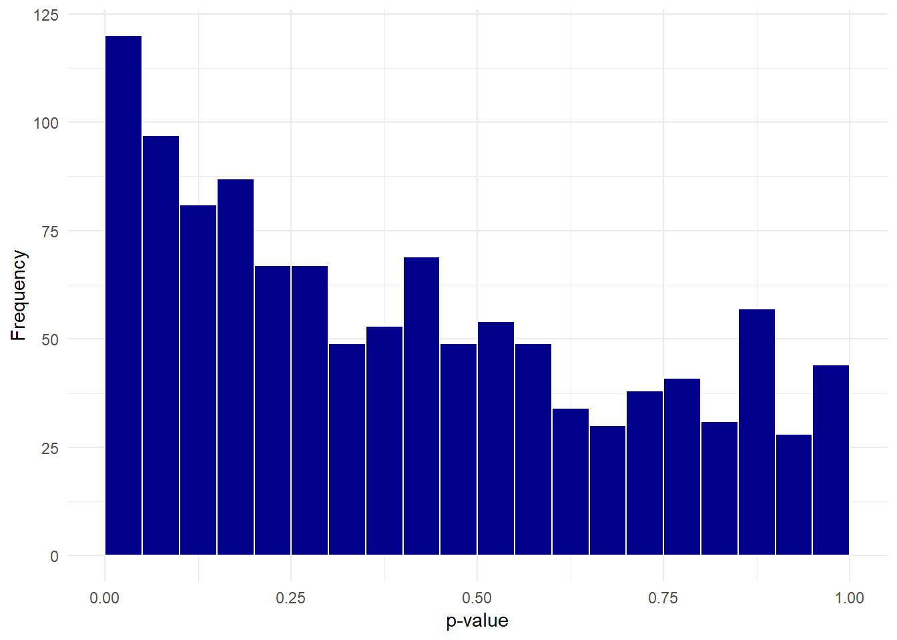
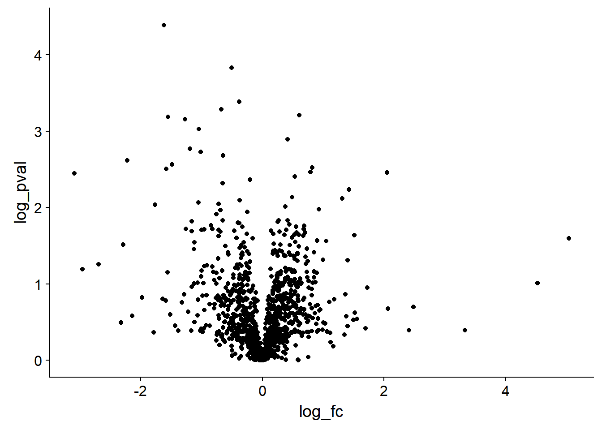

Chapter 5 Transforming and visualising proteomics data
Having imported our data set of observations for 7702 proteins from cells in three control experiments and three treatment experiments. Remember, the observations are signal intensity measurements from the mass spectrometer, and these intensities relate to the amount of protein in each experiment and under each condition.
Now we will transform the data to examine the effect of the treatment on the cellular proteome and visualise the output using a volcano plot and a heatmap. The hypothesis we are testing is that treatment changes the concentration of protein we observe.
A volcano plot is commonly used way of plotting changes in observed values on the x-axis against the likelihood of observing that change due to chance on the y-axis. Heatmaps are another way of visualising the relative (increase and decrease of) amounts of observed values.
5.1 Fold change and log-fold change
Fold changes are ratios, the ratio of say protein expression before and after treatment, where a value larger than 1 for a protein implies that protein expression was greater after the treatment.
In life sciences, fold change is often reported as log-fold change. Why is that? There are at least two reasons which can be shown by plotting.
One is that ratios are not symmetrical around 1, so it’s difficult to observe both changes in the forwards and backwards direcion i.e. proteins where expression went up and proteins where expression went down due to treatment. When we transform ratios on a log scale, the scale becomes symmetric around 0 and thus we can now observe the distribution of ratios in terms of positive, negative or no change.
Figure 5.1: Ratios are not symmetric around one, logratios are symmetric around zero.
A second reason is that transforming values onto a log scale changes where the numbers actually occur when plotted on that scale. If we consider the log scale to represent magnitudes, then we can more easily see changes of small and large magnitudes when we plot the data.
For example, a fold change of 32 times can be either a ratio 1/32 or 32/1.
As shown in Figure 5.2, 1/32 is much closer to 1 than 32/1, but transformed to a log scale we see that in terms of magnitude of difference it is the same as 32/1.
Often the log transformation is to a base of 2 as each increment of 1 represents a doubling, but sometimes a base of 10 is used, for example for p-values.

Figure 5.2: Transformation of scales using log transformation.
5.2 Dealing with missing values
Unless we’re really lucky, it’s unlikely that we’ll get observations for the same numbers of proteins in all replicated experiments. This means there will be missing values for some proteins when looking at all the experiments together. This then raises the question of what to do about the missing values? We have two choices:
- Only analyse the proteins that we have observations for in all experiments.
- Impute values for the missing values from the existing observations.
There are pros and cons to either approach. Here for simplicity we’ll use only the proteins for which we have observations in all assays.
We can drop the proteins with missing values by piping our data set to the drop_na() function from the tidyr package like so. We assign this to a new object called dat_tidy.
We’ll use the summarise function to compare the number of proteins before and after dropping the missing values using the n() counting function.
# Remove the missing values
dat_tidy <- dat %>% drop_na()
# Nunber of proteins in original data
dat %>% summarise(Number_of_proteins = n())## # A tibble: 1 x 1
## Number_of_proteins
## <int>
## 1 7702# Nunber of proteins without missing values
dat_tidy %>% summarise(Number_of_proteins = n())## # A tibble: 1 x 1
## Number_of_proteins
## <int>
## 1 1145This shrinks the dataset from 7,702 proteins to 1,145 proteins, so we can see why imputing the missing values might be more atrractive.
One approach you might like to try is to impute the data by replacing the missing values with the mean observation for each protein under each condition.
5.3 Data normalization
To perform statistical inference, for example whether treatment increases or decreases protein abundance, we need to account for the variation that occurs from run to run on our spectrometers and each give rise to a different distribution. This is as opposed to variation arising from treatment versus control which we are interested in understanding. Hence normalisation seeks to reduce the run-to-run sources of variation.
A method of normalization introduced for DNA microarray analysis is quantile normalisation (B. M. Bolstad et al. 2003). There are various ways to normalise data, so using quantile normalisation here is primarily to demonstate the approach in R, you should consider what is best for your data.
If we consider our proteomics data as a distribution of values, one value for the concentration of each protein in our experiment that together form a distribution. Figure 5.3 shows the distribution of protein concentrations observed for the three control and three treatment assays. As we can see the distributions are different for each assay.

Figure 5.3: Protein data for six assays plotted as a distributions.
A quantile represents a region of distribution, for example the 0.95 quantile is the value such that 95% of the data lies below it. To normalize two or more distributions with each other without recourse to a reference distribution we:
- Rank the value in each experiment (represented in the columns) from lowest to highest. In other words identify the quantiles for each protein in each experiment.
- Sort each experiment (the columns) from lowest to highest value.
- Calculate the mean across the rows for the sorted values.
- Then substitute these mean values back according to rank for each experiment to restore the original order.
This results in the highest ranking observation in each experiment becoming the mean of the highest observations across all experiments, the second ranking observation in each experiment becoming the mean of the second highest observations across all experiments. Therefore the distributions for each each experiment are now the same.
Dave Tang’s Blog:Quantile Normalisation in R has more details on this approach.
Figure 5.4: Quantile Normalisation from Rafael Irizarry’s tweet.
These result of quantile normalisation is that our distributions become statisitcally identitical, which we can see by plotting the densities of the normalized data. As shown in Figure 5.5 the distributions all overlay.
We do this by creating a function. This takes a data frame as the arguement and pefrorms the steps described to iterate through the data frame.
The code below is probably quite tricky to understand if you’ve not seen map functions before, but they enable a function such as rank or sort to be used on each column iteratively. What’s important here is to understand the aim, even if understanding the code requires some more reading. You can read about map functions in R4DS.
# Quantile normalisation : the aim is to give different distributions the
# same statistical properties
quantile_normalisation <- function(df){
# Find rank of values in each column
df_rank <- map_df(df,rank,ties.method="average")
# Sort observations in each column from lowest to highest
df_sorted <- map_df(df,sort)
# Find row mean on sorted columns
df_mean <- rowMeans(df_sorted)
# Function for substiting mean values according to rank
index_to_mean <- function(my_index, my_mean){
return(my_mean[my_index])
}
# Replace value in each column with mean according to rank
df_final <- map_df(df_rank,index_to_mean, my_mean=df_mean)
return(df_final)
}The normalisation function is used by piping dat_tidy first to select to exclude the first two columns with the protein accession and description in, and then to the normalisation function. We re-bind the protein accession and description afterwards from dat_tidy by piping the output to bind_cols().
dat_norm <- dat_tidy %>% select(-c(protein_accession:protein_description)) %>%
quantile_normalisation() %>%
bind_cols(dat_tidy[,1:2],.)Figure 5.5: Comparison of the protein distributions before normalization (left) and after quantile normalization (right).
5.4 Hypothesis testing with the t-test
Having removed missing values and normalised the data, we can consider our hypothesis: treatement changes the amount of protein we observe in the cells.
In practice then, what we would like to know is whether the mean value for each protein in our control and treatment assays differs due to chance or due a real effect. We therefore need to calculate the difference for each protein between treatment and control, and the probability that any difference occurs due to chance. This is what the p-value from the output of a t-test seeks to do. We need to perform 1145 t-tests.
Note There are biocondutor packages that contain functions written to do this. However as a learning exercise we are going to work through the problem.
Here I assume the reader is familiar with t-tests, but just to re-cap some important points:
We assume that the true population from which our data samples are indpendent, identically distributed and follow a normal distribution. This is not in fact true in practice, but t-test is robust to this assumption.
We assume unequal variances between the control and treatment for each protein. Hence we will perform a Welch’s t-test for unequal variances.
We don’t know whether the effect of the treatment is to increase or decrease the concentration of the protein, hence we will perform a two-sided t-test.
The observations for the proteins are for proteins of the same type but from independent experiments, rather than observations of the same individuals before and after treatment. Hence we test the observations as unpaired samples.
In R we use the base function t.test to perform Welch Two Sample t-test and this outputs the p-values we need for each protein. However, the challenge here is that our data has three observations for each condition for each protein, hence we need to group the observations for each protein according to the experimental condition as inputs to each t-test.
We’re going to follow what is called the split-apply-combine approach to deal with this problem:
- Split the data into control and treatment groups.
- Apply the t-test function to each protein using the grouped inputs and store the p-value.
- Combine all the p-values for each protein into a single vector.
To this end I’ve created a function called t_test that takes a data frame and two group vectors as inputs. It splits the data into x and y by subsetting the the data frame according to the columns defined by the groups. The extra steps here are that the subset data has to be unlisted and converted to numeric type for input to the t.test function. We then perform the t-test, which will calculate the mean of x and y and store the result in a new object, and finally the function creates a data frame with a single variablep_val which is then returned as the function output.
# T-test function for multiple experiments
t_test <- function(dt,grp1,grp2){
# Subset control group and convert to numeric
x <- dt[grp1] %>% unlist %>% as.numeric()
# Subset treatment group and convert to numeric
y <- dt[grp2] %>% unlist %>% as.numeric()
# Perform t-test using the mean of x and y
result <- t.test(x, y)
# Extract p-values from the results
p_vals <- tibble(p_val = result$p.value)
# Return p-values
return(p_vals)
} To use the t_test function to perform many t-tests and not just one t-test, we need to pass our t_test function as an arguement to another function.
This probably seems quite confusing, but the point here is that we want to loop through every row in our table, and group the three control and three treatment columns separately. Our t_test function deals with the latter problem, and by passing it to adply from the plyr package we can loop through each row and it adds the calculated p-values to our original table.
Concretely then, adply takes an array and applies the t_test function to each row and we supply the column group indices arguments to the t_test funcition. Here the indicies are columns 3 to 5 for the control experiments and columns 6 to 8 for the treatment functions. The function returns the input data with an additional corresponding p-value column. Note I’ve piped the output to as.tibble() to transform the data.frame output of adply to tibble form to prevent errors that can occur if we try to bind data frames and tibbles.
An important point here is that we can use this function for any number of columns and rows providing our data is in the same tidy form by changing the grouping indices.
# Apply t-test function to data using plyr adply
# .margins = 1, slice by rows, .fun = t_test plus t_test arguements
dat_pvals <- plyr::adply(dat_norm,.margins = 1, .fun = t_test,
grp1 = c(3:5), grp2 = c(6:8)) %>% as.tibble()To check our function, here’s a comparision of calculating the first protein p-value as a single t-test as shown in the following code and the output of the function.
# Perform t-test on first protein
t.test(as.numeric(dat_norm[1,3:5]),
as.numeric(dat_norm[1,6:8]))$p.value| t_test p-val | t.test p-val |
|---|---|
| 0.0927 | 0.0927 |
We can plot a histogram of the p-values:
# Plot histogram
dat_pvals %>%
ggplot(aes(p_val)) +
geom_histogram(binwidth = 0.05,
boundary = 0.5,
fill = "darkblue",
colour = "white") +
xlab("p-value") +
ylab("Frequency") +
theme_minimal()
5.5 Calculating fold change
To perform log transformation of the observations for each protein we take our data and use select to exlude the columns of character vectors and the pipe the output to log2() and use the pipe again to create a data frame.
Then we use bind_cols to bind the first two columns of dat_pvals followed by dat_log and the last column of dat_pvals. This maintains the original column order.
# Select columns and log data
dat_log <- dat_pvals %>%
select(-c(protein_accession,protein_description,p_val)) %>%
log2()
# Bind columns to create transformed data frame
dat_combine <- bind_cols(dat_pvals[,c(1:2)], dat_log, dat_pvals[,9]) The log fold change is then the difference between the log mean control and log mean treatment values. By use of grouping by the protein accession we can then use mutate to create new variables that calculate the mean values and then calculate the log_fc. Whilst we’re about it, we can also calculate a -log10(p-value). As with fold change, transforming the p-value on a log10 scale means that a p-value of 0.05 or below is transformed to 1.3 or above and a p-value of 0.01 is equal to 2.
dat_fc <- dat_combine %>%
group_by(protein_accession) %>%
mutate(mean_control = mean(c(control_1,
control_2,
control_3)),
mean_treatment= mean(c(treatment_1,
treatment_2,
treatment_3)),
log_fc = mean_control - mean_treatment,
log_pval = -1*log10(p_val))The next step is not necessary, but for ease of viewing we subset dat_fc to create a new data frame called dat_tf that contains only four variables. We could potentially write this to a csv file for sharing.
# Final transformed data
dat_tf <- dat_fc %>% select(protein_accession,
protein_description,
log_fc, log_pval)Let’s look at the head of the final table:
| protein_accession | protein_description | log_fc | log_pval |
|---|---|---|---|
| VATA_HUMAN_P38606 | V-type proton ATPase catalytic subunit A OS=Homo sapiens GN=ATP6V1A PE=1 SV=2 | 0.3687886 | 1.0327506 |
| RL35A_HUMAN_P18077 | 60S ribosomal protein L35a OS=Homo sapiens GN=RPL35A PE=1 SV=2 | -0.2505780 | 1.1400318 |
| MYH10_HUMAN_P35580 | Myosin-10 OS=Homo sapiens GN=MYH10 PE=1 SV=3 | 0.3838733 | 0.0056494 |
| RHOG_HUMAN_P84095 | Rho-related GTP-binding protein RhoG OS=Homo sapiens GN=RHOG PE=1 SV=1 | -0.3417452 | 0.3775483 |
| PSA1_HUMAN_P25786 | Proteasome subunit alpha type-1 OS=Homo sapiens GN=PSMA1 PE=1 SV=1 | 0.0371316 | 0.0920101 |
5.6 Visualising the transformed data
Plotting a histogram of the log fold change gives an indication of whether the treatment has an effect on the cells. Most values are close to zero, but there are some observations far above and below zero suggesting the treatment does have an effect.
# Plot a histogram to look at the distribution.
dat_tf %>%
ggplot(aes(log_fc)) +
geom_histogram(binwidth = 0.5,
boundary = 0.5,
fill = "darkblue",
colour = "white") +
xlab("log2 fold change") +
ylab("Frequency") +
theme_minimal()Figure 5.6: Histogram of log fold change.
However, we don’t know if these fold changes are dueto chance or not, which is why we calculated the p-values. A volcano plot will include the p-value information.
5.7 Volcano plot
A volcano plot is a plot of the log fold change in the observation between two conditions on the x-axis, for example the protein expression between treatment and control conditions. On the y-axis is the corresponding p-value for each observation, representing the likelihood that an observed change is due to the different conditions rather than arising from a natural variation in the fold change that might be observed if we performed many replications of the experiment.
The aim of a volcano plot is to enable the viewer to quickly see the effect (if any) of an experiment with two conditions on many species (i.e. proteins) in terms of both an increase and decrease of the observed value.
Like all plots it has it’s good and bad points, namely it’s good that we can visualise a lot of complex information in one plot. However this is also it’s main weakness, it’s rather complicated to understand in one glance.
dat_tf %>% ggplot(aes(log_fc,log_pval)) + geom_point()
However it would be much more useful with some extra formatting, so the code below shows one way to transform the data to include a threshold which can then be used by ggplot to create an additional aesthetic. The code below also includes some extra formatiing which the reader can explore.
dat_tf %>%
# Add a threhold for significant observations
mutate(threshold = if_else(log_fc >= 2 & log_pval >= 1.3 |
log_fc <= -2 & log_pval >= 1.3,"A", "B")) %>%
# Plot with points coloured according to the threshold
ggplot(aes(log_fc,log_pval, colour = threshold)) +
geom_point(alpha = 0.5) + # Alpha sets the transparency of the points
# Add dotted lines to indicate the threshold, semi-transparent
geom_hline(yintercept = 1.3, linetype = 2, alpha = 0.5) +
geom_vline(xintercept = 2, linetype = 2, alpha = 0.5) +
geom_vline(xintercept = -2, linetype = 2, alpha = 0.5) +
# Set the colour of the points
scale_colour_manual(values = c("A"= "red", "B"= "black")) +
xlab("log2 fold change") + ylab("-log10 p-value") + # Relabel the axes
theme_minimal() + # Set the theme
theme(legend.position="none") # Hide the legendFigure 5.7: A volcano plot with formatting to highlight the significant proteins
5.7.1 But which proteins are the significant observations?
To extract the proteins in red in Figure 5.7 we filter dat_tf according to our threshold and then create a new variable using the str_extract function used in Section 4.5.
Note We need to ungroup the data we grouped when calculating the log_fc to be able to select columns without keeping the grouping variable column too.
dat_tf %>%
# Filter for significant observations
filter(log_pval >= 1.3 & (log_fc >= 2 | log_fc <= -2)) %>%
# Get last six characters
mutate(prot_id = str_extract(protein_accession,".{6}$")) %>%
# Ungroup the data
ungroup() %>%
# Select columns of interest
select(prot_id,protein_description,log_fc,log_pval)## # A tibble: 5 x 4
## prot_id protein_description log_fc log_pval
## <chr> <chr> <dbl> <dbl>
## 1 Q02952 A-kinase anchor protein 12 OS=Homo sapiens GN=A~ -2.29 1.52
## 2 O94808 Glutamine--fructose-6-phosphate aminotransferas~ -3.09 2.45
## 3 H7BYV1 Interferon-induced transmembrane protein 2 (Fra~ 2.05 2.46
## 4 P06756 Integrin alpha-V OS=Homo sapiens GN=ITGAV PE=1 ~ -2.22 2.62
## 5 Q8TDI0 Chromodomain-helicase-DNA-binding protein 5 OS=~ 5.04 1.605.8 Creating a heatmap
Here we’ll create a heatmap using the heatmap.2 function from the gplots package and the pheatmap function from the pheatmap package.
To create a heatmap we need to perform a few more transformations:
Filter the data according to a threshold of significance. This time we’ll use a more relaxed log_fc cut-off to ensure we have enough proteins to plot. At the same time we’ll extract the protein ids as before.
We then have to transform our filtered data into a
matrix.data.frameobject for use withpheatmap. We name the rows with the protein idsWe’ll use base R function
scaleto centre our log transformed data around zero. To do this per experiment we transpose the matrix as scale centres rows, and the flip the matrix back again.
# Keep the same p-val cut-off, but relax the log_fc to 1 which represents a
# doubling
dat_filt <- dat_fc %>%
filter(log_pval >= 1.3 & (log_fc >= 1 | log_fc <= -1)) %>%
mutate(prot_id = str_extract(protein_accession,".{6}$"))
# Convert to matrix data frame
dat_matrix <- as.matrix.data.frame(dat_filt[,3:8])
# Name the rows with protein ids
row.names(dat_matrix) <- dat_filt$prot_id
# Transpose and scale the data to a mean of zero and sd of one
dat_scaled <- scale(t(dat_matrix)) %>% t()5.8.1 Calculating similarity and clustering
At this point we could just plot the data, but to understand what the heatmap functions do to cluster the data, let’s step through the process.
Our data here as log fold change in concentrations, but how do we group them? The simplest thing to do is to turn the data into distances, as a measure of similarity, where close things are similar and distant things are dissimilar.
The Euclidean distance \(d\) between a pair of observations \(x_i\) and \(y_i\) is defined as:
\(d = \sqrt{\sum{_i}(x_i - y_i)^2}\)
Lets calculate the distance between the columns in dat_scaled.
In dat_scaled the experiments are in the columns. In calculating the distance is between the experiments for all the proteins in each experiment. What would we expect?
We’d expect the controls to be close to each other and the treated to be close to each other, right?
Let’s do this in detail, for example the distance between control_1 and control_2 is sqrt(sum((dat_scaled[,1] - dat_scaled[,2])^2)).
This means we take the column 2 values from column 1 values, squaring the results and summing them all to a single value and taking the square root to find the linear distance between these rows, which is 3.26.
You can check this against the first value in d1 that we calculate below in using dist.
We do the same for the proteins, but we don’t know what to expect. Here’s the code for calculating both distance matrices
# Transpose the matrix to calculate distance between experiments, row-wise
d1 <- dat_scaled %>% t() %>%
dist(.,method = "euclidean", diag = FALSE, upper = FALSE)
# Calculate the distance between proteins row-wise
d2 <- dat_scaled %>%
dist(.,method = "euclidean", diag = FALSE, upper = FALSE)
# Show the values for d1
round(d1,2)## control_1 control_2 control_3 treatment_1 treatment_2
## control_2 3.26
## control_3 3.20 3.27
## treatment_1 8.97 8.60 8.65
## treatment_2 9.40 8.98 8.86 2.35
## treatment_3 9.04 8.56 8.50 2.46 1.71Having calculated the distance matrices, we can cluster proteins and experiments accordingly.
There are lots of flavours of clustering, and no clear way to say which is best. Here we’ll use the Ward criterion for clustering which attempts to minimise the variance within clusters as it merges the data into clusters, using the distances we’ve calculated. The data is merged from the bottom up (aka agglomeration) adding data points to a cluster and splitting them according to the variance criterion.
See Wikipedia for more detail: Hierarchical clustering
# Clustering distance between experiments using Ward linkage
c1 <- hclust(d1, method = "ward.D2", members = NULL)
# Clustering distance between proteins using Ward linkage
c2 <- hclust(d2, method = "ward.D2", members = NULL)Now lets look at the dendrograms made by clustering our distance matrices d1 and d2:
# Check clustering by plotting dendrograms
par(mfrow=c(2,1),cex=0.5) # Make 2 rows, 1 col plot frame and shrink labels
plot(c1); plot(c2) # Plot both cluster dendrograms
Figure 5.8: Dendrograms of Ward clustering of distance matrices
As we’d expect, Figure 5.8 shows the controls and treatments cluster respectively.
5.8.2 Plotting the heatmap
The heatmap.2 function from the gplots package will automatically perform the distance calculation and clustering we performed, and it can also do the scaling we did. It only requires the matrix as an input by default. It will use a different clustering method by default.
However, as we’ve performed scaling and calculated the clusters, we can pass them to heatmap function.
I’ll leave it to the reader to explore all the options here, but the concept in the code below to create Figure 5.9 is:
- Create a 25 increment blue/white/red colour pallette
- Pipe
dat_scaledto a function that renames the colums - Pipe this to the
heatmap.2function - Pass the clusters
c1andc2to the plot - Change some aesthetics such as the colours, and the font sizes
# Set colours for heatmap, 25 increments
my_palette <- colorRampPalette(c("blue","white","red"))(n = 25)
# Plot heatmap with heatmap.2
par(cex.main=0.75) # Shrink title fonts on plot
dat_scaled %>%
# Rename the comlums
magrittr::set_colnames(c("Ctl 1", "Ctl 2", "Ctl 3",
"Trt 1", "Trt 2", "Trt 3")) %>%
# Plot heatmap
gplots::heatmap.2(., # Tidy, normalised data
Colv=as.dendrogram(c1), # Experiments clusters in cols
Rowv=as.dendrogram(c2), # Protein clusters in rows
revC=TRUE, # Flip plot to match pheatmap
density.info="histogram", # Plot histogram of data and colour key
trace="none", # Turn of trace lines from heat map
col = my_palette, # Use my colour scheme
cexRow=0.6,cexCol=0.75) # Amend row and column label fonts
Figure 5.9: Heatmap created with heatmap.2 using the clusters calculated.
An alternative and more ggplot style is to use the pheatmap package and function (Kolde 2018).
In Figure 5.10 dat_scaled is piped to set_columns again to rename the experiments for aesthetic reasons. The output is the piped to pheatmap which performs the distance and clustering automatically. The only additional arguements used here are to change the fontsize and create some breaks in the plot to highlight the clustering.
There is lots more that pheatmap can do in terms of aesthetics, so do explore.
dat_scaled %>%
# Rename the comlums
magrittr::set_colnames(c("Ctl 1", "Ctl 2", "Ctl 3",
"Trt 1", "Trt 2", "Trt 3")) %>%
# Plot heatmap
pheatmap(.,
fontsize = 7,
cutree_rows = 2, # Create breaks in heatmap
cutree_cols = 2) # Create breaks in heatmap
Figure 5.10: Heatmap created using pheatmap with breaks to highlight clusters.
5.9 Venn diagram
Another common plot used in proteomics is the Venn diagram. For these I use the VennDiagram package (Chen 2018)
5.10 Peptide sequence logos
Finally, creating sequence logos from peptides is another common task, especially if you are doing immunopeptidomics and would like to explore the fequency of amino acid types at each position in a set of peptide sequences.
References
Bolstad, B M, R A Irizarry, M Astrand, and T P Speed. 2003. “A Comparison of Normalization Methods for High Density Oligonucleotide Array Data Based on Variance and Bias.” Bioinformatics (Oxford, England) 19 (2): 185–93.
Kolde, Raivo. 2018. Pheatmap: Pretty Heatmaps. https://CRAN.R-project.org/package=pheatmap.
Chen, Hanbo. 2018. VennDiagram: Generate High-Resolution Venn and Euler Plots. https://CRAN.R-project.org/package=VennDiagram.